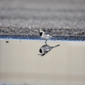
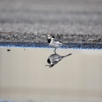

都市型野鳥観察クラブ

谷津干潟 春の野鳥観察会


 

今回の観察会はラムサール条約にも登録されている「谷津干潟」です。開発の進んだ東京湾に残る貴重な野鳥観察地です。 冬の間は渡り鳥の種類が多く、にぎやかな場所ですが、今は冬の渡り鳥たちが去って少し静かになっているので落ち着いた観察ができます。 私たちが普段街で見かける野鳥の他に水鳥など干潟でしか見られない珍しい野鳥も観察できます。
- 日時：
- 4月20日（日）8:00〜
- 集合場所：
- JR京葉線 南船橋駅
- 用意する物：
- 観察器具やカメラはご自分でお持ちください。
※ お子様連れでの参加も歓迎します。
今回の観察会では写真のような野鳥が見られる予定です。左からエナガ、ダイサギ、カルガモ、ハクセキレイです。他にもたくさんの野鳥が見られます。ぜひおいでください。